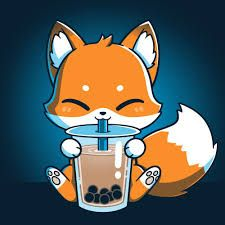

About Me
Hello there my name is the_fox or sandra. some small things about me and my hobbys. Im from norway and my home town is Bergen. my hobbys can be a bit weird but same time fun to have. i also got 2 cat`s i got form the animal shelter and they are verry dear too me. my cat`s are 2 brother`s they dont look alike but they got the same mother. there name is Felix and Maxie my little lion and tiger.
My Hobbys
One of my hobby`s is are gammeing. i really love the imagination ppl have to put in too thos games. Another hobby of mine i music. I do lisen to music alot and it`s alot of diffrend type of music, alot of them are music from games i love how a simpel, sound can capture your own imagination, if u never heard or seen where its from. My third little hobby is fishing, i really love fishing where i live its not to far form a lake, and its a place not to far from where i live. My fourth littl hobby i would say its two things that take that spot for me, one of them is coloring drawings is super relexing and i can just zone out complitly, second one is i like painting warhammer figures, it can sometimes be demending on consentrasion, specialy when u sit with a toothe picker to get paint on the smallest part.